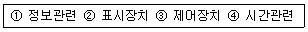
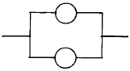
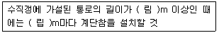

건설안전산업기사 (2002-03-10 기출문제)
1과목: 산업안전관리론
1. 연간 근로 총시간수가 58만 시간이고 이 기간중에 휴업재해가 7건 발생했다. 도수율은?
- 10.90
- 11.76
- 12.07
- 12.86
(정답률: 59%)

2. Hershey A.B의 피로대책의 원칙 중 단조로움, 권태감에 의한 피로대책은?
- 작업교대를 실시하는 일
- 용의 주도한 작업계획 수립 이행
- 불필요한 마찰을 배제하는 일
- 일의 가치를 가르치는 일
(정답률: 36%)
3. 연간 평균 근로자수가 1000명을 채용하고 있는 사업장에서 연간 6건의 재해가 발생한다고 할 때 빈도율은? (단, 일일 근로시간수는 4시간, 연평균근로일수는 150일)
- 1000
- 100
- 10
- 1
(정답률: 71%)
4. 다음 중 학습에 직접적인 영향을 미치는 요인이 아닌 것은?
- 적성(Aptitude)
- 동기유발(Motivating)
- 준비도(Readiness)
- 기억과 망각(Memory, Forgetting)
(정답률: 55%)
5. 안전관리 조직의 기본 방식이 아닌 것은?
- line system
- staff system
- line-staff system
- safety system
(정답률: 71%)
6. 교육과제에 정통한 전문가 4∼5명이 피교육자 앞에서 자유로이 토의를 실시한 다음에 피교육자 전원이 참가하여 사회자의 사회에 따라 토의하는 방식에 해당되는 것은?
- 포럼(forum)
- 패널 디스커션(panel discussion)
- 심포지엄(symposium)
- 버즈 세션(buzz session)
(정답률: 54%)
7. 버드(Frank Bird)의 재해 발생 이론에서 첫번째 요인인 제어의 부족 내용에 해당되지 않는 것은?
- 안전계획 및 직무계획의 책정
- 직무활동에 있어 시설기준 설정
- 불안전 행동의 징후
- 설정된 기준에 의한 실적 평가
(정답률: 41%)
8. 다음 중 안전점검의 목적과 관계가 가장 적은 것은?
- 결함이나 불안전 조건의 제거
- 합리적인 생산관리
- 기계설비의 본래의 성능 유지
- 인간 생활의 복지 향상
(정답률: 54%)
9. 에너지 대사율(R.M.R)이 높은 작업의 경우 사고예방 대책은 어느 것인가?
- 작업시간 연장
- 휴식시간 증가
- 임금의 증액
- 작업의 전환
(정답률: 61%)
10. 다음중 재해 방지 기본 원칙중 해당되지 않는 것은?
- 대책 선정 원칙
- 손실 우연 원칙
- 예방 가능 원칙
- 통계의 원칙
(정답률: 72%)
11. 다음 중 수강자와 교재 중심의 개별학습이 아닌 것은?
- 발견학습
- 과제학습
- 수용학습
- 프로그램 학습
(정답률: 24%)
12. 재해코스트에서 직접비는 다음중 어느 것인가?
- 회사내의 직접적인 손실비
- 보험에서 지급되는 비용
- 재해자의 재해발생시 인건비
- 행정손실에 따른 발생비용
(정답률: 45%)
13. 작업태도 분석에 의한 동기 파악방법의 연구과정은?
- 요인→ 태도→ 결과
- 태도→ 결과→ 요인
- 결과→ 요인→ 태도
- 태도→ 요인→ 결과
(정답률: 35%)
14. 조직의 환경상태가 불확실 할 때 리더쉽의 유형이 어떤형이 될 것인가?
- 권위형
- 방임형
- 민주형
- 독재형
(정답률: 52%)
15. 흰색 바탕에 빨간색 기본모형의 안전, 보건 표지판의 종류는 어느 것인가?
- 지시
- 금지
- 경고
- 인내
(정답률: 57%)
16. 문재해결 4단계에서 대책 수립 몇 단계는?
- 1단계
- 2단계
- 3단계
- 4단계
(정답률: 70%)
17. 피로측정방법 중 정신적 변화를 이용한 측정방법은?
- 반사기능
- 감각기능
- 대사물의 질량변화
- 자세의 변화
(정답률: 37%)
18. 안전교육 과정 중 "할 수 있다"라는 즉 피교육자가 그것을 스스로 행함으로서만 얻어지는 교육내용에 해당하는 것은?
- 안전지식의 교육
- 안전의식의 교육
- 안전태도의 교육
- 안전기능 교육
(정답률: 31%)
19. 안전을 위한 동기부여로 옳지 않은 것은?
- 안전목표를 명확히 설정하여 주지시킨다.
- 상벌제도를 합리적으로 시행한다.
- 경쟁과 협동을 유도한다.
- 기능을 숙달시킨다.
(정답률: 64%)
20. 안전모의 성능시험항목에 따른 성능기준이 종류 AE, ABE종 안전모는 질량 증가율이 1% 미만이어야 하는 항목은?
- 충격흡수성
- 내전압성
- 내수성
- 난여성
(정답률: 45%)
2과목: 인간공학 및 시스템안전공학
21. 시스템 안전분석 기법중 시스템 디자인 단계에서 처음으로 사용되는 것은?
- FTA
- FHA
- PHA
- OHA
(정답률: 55%)
22. 시스템 퍼포먼스(SP)와 휴먼에러(HE)와의 관계는 SP=f(HE)=K(HE)로 나타낸다. (단, f:함수, K:상수)다음중 휴먼에러가 시스템 퍼포먼스에 대하여 중대한 영향을 일으키는 것은?
- K=1
- K<1
- K>1
- K=0
(정답률: 19%)
23. 작업장 소음의 영향과 거리가 먼 것은?
- 청취촉진 효과
- 주위 산만 효과
- 각성 효과
- 작업능률감소 효과
(정답률: 48%)
24. 인간-기계 기능계 체계에서 기능에 형태에 속하지 않는 것은?
- 경고신호
- 행동기능
- 감지
- 정보저장
(정답률: 24%)
25. 인간공학에서 사용되는 인간기준의 4가지 유형에 속하지 않는 것은?
- 사고빈도
- 인간성능척도
- 생리학적지표
- 작업만족도
(정답률: 30%)
26. 인간-기계 시스템(man-machine system)에서 조작상 인간 에러발생 빈도수의 순서로 맞는 것은?

- ①-②-③-④
- ①-②-④-③
- ①-④-③-②
- ②-①-③-④
(정답률: 30%)
27. 제어장치의 레바를 2cm 이동시켰더니 표시장치의 지침이 8cm 이동하였다. 이 계기의 통제표시비(C/D)는 얼마인가?
- 0.15
- 0.25
- 0.35
- 0.45
(정답률: 49%)
28. 인간과 기계능력에 대한 실용성 한계에 대한 내용과 거리가 먼 것은?
- 일반적인 인간-기계 비교가 항상 적용된다.
- 상대적인 비교는 항상 변하기 마련이다.
- 기능의 수행이 유일한 기준은 아니다.
- 최선의 성능을 마련하는 것이 항상 중요한 것은 아니다.
(정답률: 41%)
29. 위험작업분석시 고려해야 할 사항이 아닌 것은?
- 육체적 요구조건
- 작업환경 조건
- 보건상 위험성
- 교육훈련의 조건
(정답률: 30%)
30. 인간-기계통합 체계에서 인간 또는 기계에 의해서 수행되는 4가지 기본 기능 중 다른 세가지 기능 모두와 상호작용 하는 것은?
- 감지
- 정보 보관
- 행동 기능
- 정보처리 및 의사결정
(정답률: 20%)
31. 어떤 결함수의 쌍대결함수를 구하여 컷셋을 구하면 이 컷셋은 본래 결함수의 무엇에 해당되는가?
- 컷셋
- 패스셋
- 최소컷셋
- 최소패스셋
(정답률: 19%)
32. 다음중 인간 기계 시스템에서의 신뢰도 유지방안이 아닌것은?
- fail - safe system
- control system
- fool - proof system
- lock system
(정답률: 32%)
33. 숫자,영문자,기하학적 형상,구성중 암호로서의 성능이 가장 좋은 것부터의 순서의 배열은?
- 기하학적형상 - 숫자 - 구성 - 영문자
- 구성 - 기하학적형상 - 영문자 - 숫자
- 영문자 - 구성 - 숫자 - 기하학적형상
- 숫자 - 영문자 - 기하학적형상 - 구성
(정답률: 44%)
34. 조명강도를 높인 결과 작업자들의 생산성이 향상되었고 그후 다시 조명강도를 낮추어도 생산성의 변화는 거의 없었다. 라는 결과는 다음중 어느 실험의 결과인가?
- Heinrich 실험
- Compes 실험
- Birds 실험
- Hawthorne 실험
(정답률: 44%)
35. 다음 중 귀납적이고 정량적인 위험분석방법은?
- FMEA
- ETA
- THERP
- MORT
(정답률: 30%)
36. 고장율이 λ 인 지수분포를 갖는 동일한 두 개의 독립적인 부품의 병렬구조 시스템의 신뢰도는 얼마인가?

- R(t) = e-λtㆍe-λt
- R(t) = 2e-λt - e-2λt
- R(t) = λ ,λ
- R(t) = 1 - (1-λ )ㆍ(1-λ )
(정답률: 23%)
37. 위험 및 운전성 검토(HAZOP)에서 성질상의 감소를 나타내는 유인어(guide words)는?
- MORE LESS
- PART OF
- AS MORE AS
- MUCH LESS
(정답률: 21%)
38. Fail safe와 거리가 가장 먼 것은?
- Feed back
- Fool proof
- Inter lock
- Trap system
(정답률: 39%)
39. 제품을 안전하게 만드는 기본 수법과 거리가 먼 것은?
- 제품 책임을 명시한다.
- 제품에서 위험성을 배제하여 설계한다.
- 보호장치나 차폐장치로 위험 가능성으로부터 보호한다.
- 올바른 사용법, 적절한 경고사항과 사용설명을 제공한다.
(정답률: 25%)
40. 다음 기계조작시 출력응답에 속하는 반응은?
- 표시램프의 점멸
- 사이렌소리
- 레바의 조작
- 기계의 기능정지
(정답률: 24%)
3과목: 건설시공학
41. 모래의 증가율이 15%이고, 굴토량이 261m3라면 잔토처리량은?
- 300m3
- 250m3
- 231m3
- 200m3
(정답률: 31%)
42. 건축공사 현장에서 공정표 작성시 가장 기본이 되는 사항은?
- 각 공사별 작업량
- 실행예산
- 자재 및 노무수급 계획
- 기후조건
(정답률: 53%)
43. 녹막이칠을 하지않는 부분 중 틀린 것은?
- 고장력 볼트 마찰 접합부의 마찰면
- 조립에 의하여 맞닿는 면
- 현장 용접하는 부분
- 개방형 단면을 한 부재
(정답률: 32%)
44. 소규모의 철골양중작업에 많이 사용되는 것으로 펜트하우스와 같은 돌출부에도 사용하는 것은?
- 타워크레인
- 진폴
- 트럭크레인
- 가이데릭
(정답률: 34%)
45. 콘크리트의 이어치기에 대한 설명으로 틀린 것은?
- 슬랩과 보는 스팬의 중앙 혹은 단부의 1/4부분에서 이어치기한다.
- 기둥과 기초는 슬랩의 상단에서 이어치기한다.
- 캔틸레버 보는 단부의 1/4에서 이어치기한다.
- 콘크리트의 이어치기는 응력이 적은 곳에서 한다.
(정답률: 29%)
46. 지반정리 작업을 위한 장비가 아닌 것은?
- 블도우저(Bulldozer)
- 드래그쇼벨(drag shovel)
- 그레이더(grader)
- 스크레이퍼(scraper)
(정답률: 50%)
47. 건설공사의 원가계산에 관한 설명 중 옳지 않은 것은?
- 직접노무비는 작업에 종사하는 종업원, 노무자의 기본급, 제수당, 퇴직급여 등이 포함된다.
- 재료비는 공사목적물의 실체를 형성하는 것만을 말하며 크게 직접재료비, 가설재료비, 간접재료비로 나누어 계산한다.
- 공사원가란 시공과정에서 필요한 재료비, 노무비, 경비의 합계액이다.
- 노무비를 크게 나누면 직접노무비와 간접노무비로 나눈다.
(정답률: 33%)
48. 다음 중 서로 관련이 없는 것은?
- 어스 오거(earth auger) - 말뚝지정 공사
- 언더 피닝(under pinning) - 철골공사
- 올 케이싱(all casing)공법 - 말뚝 지정공사
- 바이브로 콤포저(vibro composer) - 지반개량 공사
(정답률: 44%)
49. 토공사 흙막이 지보공 재료중 강재 지보공의 특징이 아닌것은?
- 가설이나 철거가 비교적 용이하다.
- 내구성이 풍부하다.
- 변형량이 작다.
- 전용해서 사용하므로 경제적이다.
(정답률: 9%)
50. 다음 중 시방서 작성에 관한 내용으로 옳은 것은?
- 시방서는 건축주가 작성한다.
- 시방서는 도급자가 작성한다.
- 시방서는 건축설계자가 작성한다.
- 시방서는 도급자와 건축주가 공동으로 작성한다.
(정답률: 55%)
51. 철근콘크리트 바닥철근에 관한 기술 중 틀린 것은?
- 바닥판의 두께는 10cm 이상 또는 그 단변의 길이의 1/30 이상으로 한다.
- 바닥철근의 최대간격은 주근 20cm이하, 배력근은 30cm 이하로 한다.
- 주근은 바깥에, 부근은 안에 두는 것을 원칙으로 한다.
- 한바닥판의 짧은 간사이에 방향을 주근으로 한다.
(정답률: 12%)
52. 표준관입시험과 관계 없는 것은?
- 해머중량은 63.5㎏
- 해머의 낙하높이는 75㎝
- 관입에 따른 타격회수는 N/30으로 표시
- 재하판 면적은 0.2m2
(정답률: 40%)
53. 연약지반의 공사장 주변을 원할하게 이동하면서 철골 세우기가 가능한 장비는?
- 가이데릭
- 스티프레그데릭
- 트럭 크레인
- 크로울러 크레인
(정답률: 31%)
54. 창호와 창호용 철물과의 조합중 옳지 않은 것은?
- 미닫이문 - 호차와 창호레일
- 양여닫이문 - 후레쉬볼트와 문받이
- 오르내리창 - 크레센트와 창도르레
- 외여닫이문 - 도어클로저와 자유경첩
(정답률: 26%)
55. 잡석지정에 관한 기술 중 틀린 것은?
- 잡석의 다짐은 몽둥달고 또는 떨공이를 사용한다.
- 견고한 자갈층에도 잡석지정을 해야 한다.
- 잡석지정의 폭은 기초의 폭보다 넓게 한다.
- 잡석지정은 이완된 지표면을 다지고 콘크리트의 두께를 절약한다.
(정답률: 33%)
56. 굳지 않은 콘크리트의 측압에 대한 영향이 가장 적은 것은?
- 굳지않은 콘크리트의 다지기 방법
- 온도 및 대기의 습도
- 콘크리트 부어넣기 속도
- 콘크리트 발열
(정답률: 34%)
57. 콘크리트 타설 작업의 기본원칙 중 맞는 것은?
- 타설구획내의 가까운 곳부터 타설한다.
- 타설구획내의 콘크리트는 휴식시간을 가지면서 타설한다.
- 낙하높이는 크게 한다.
- 타설위치에 가까운 곳까지 펌프, 버킷 등으로 운반 하여 타설한다.
(정답률: 60%)
58. 거푸집공사에서 사회, 기술환경의 변화에 따른 합리적인 공법으로의 발전방향이 아닌 것은?
- 부재의 경량화
- 거푸집의 소형화
- 설치의 단순화
- 높은 전용회수
(정답률: 55%)
59. 기초의 종류 중 기초슬랩의 형식에 따른 분류가 아닌것은?
- 독립기초
- 줄기초
- 복합기초
- 직접기초
(정답률: 36%)
60. 제치장 콘크리트에 관한 설명 중 올바르지 않은 것은?
- 제치장 콘크리트는 최대자갈 지름 25㎜이하를 사용한다.
- 철근 피복두께는 구조 내력상 1㎝ 정도 두껍게 한다.
- 벽ㆍ기둥은 한번에 꼭대기까지 타설한다.
- 가설비, 즉 거푸집 비용을 절감할 수 있다.
(정답률: 20%)
4과목: 건설재료학
61. 제 4과목: 건설재료학 폴리에스테르 수지에 관한 설명 중 옳지 않은 것은?
- 포화 폴리에스테르수지는 알키드수지라 불리운다.
- 포화 폴리에스테르 수지는 주로 도료 용으로 쓰인다.
- 불포화 폴리에스테르수지는 유리섬유로 보강하여 F.R.P를 만든다.
- 포화 폴리에스테르수지는 열가소성수지이다.
(정답률: 32%)
62. 주철의 압축강도는 인장강도의 몇배 정도인가?
- 0.5배
- 1배
- 1.5∼ 2배
- 3∼ 4배
(정답률: 33%)
63. 목재의 함수율이 섬유포화점이라 하면 함수율 얼마 정도를 말하는가?
- 10%
- 15%
- 30%
- 100%
(정답률: 55%)
64. 미장재료에 대한 설명으로 틀린 것은?
- 회반죽바름은 수경성 재료이며 소석회에 물과 풀을 넣고 여물을 섞어 바른다.
- 질석모르타르는 질석을 모르타르에 혼입한 것으로 내화피복 용 바름재로 쓰인다.
- 돌로마이트 플라스터는 기경성 재료이며 건조수축이 크다.
- 석고 플라스터는 소석고를 주성분으로 한다.
(정답률: 23%)
65. 알루미늄의 물리적 성질에 대한 설명 중 옳지 않은 것은?
- 비중은 약 2.7, 융점은 약 660℃ 정도이다.
- 반사율이 크므로 열선(熱線)등을 차단하여 열차단재로 쓰인다.
- 열팽창율은 철과 거의 비슷하다.
- 경량질인데 비하여 강도가 커서 준구조재로 사용된다
(정답률: 25%)
66. 점토제품에서 S.K 번호란 무엇을 나타내는가?
- 내화벽돌의 강도
- 점토제품의 종류
- 제품의 소성온도
- 내화벽돌의 원료
(정답률: 42%)
67. ALC 제품의 가장 큰 단점은 무엇인가?
- 방음, 단열효과가 떨어진다.
- 중량이 크다
- 흡수성이 크다
- 변형이나 균열의 발생이 많다
(정답률: 24%)
68. 석재 중 흡수율이 큰것 부터 순서로 옳은것은?
- 응회암 - 화강암 - 사암 - 대리석 - 안산암
- 사암 - 안산암 - 대리석 - 화강암 - 응회암
- 사암 - 대리석 - 화강암 - 안산암 - 응회암
- 응회암 - 사암 - 안산암 - 화강암 - 대리석
(정답률: 39%)
69. 콘크리트의 물시멘트비를 결정할때 사용되는 골재의 상태는?
- 절대 건조상태
- 공기 중 건조상태
- 표면건조 내부포화상태
- 습윤상태
(정답률: 28%)
70. 인조석바름 재료에 관한 설명 중 옳지 않은 것은?
- 재료는 종석, 백색 포틀랜드시멘트, 안료, 돌가루로 배합한다.
- 돌가루는 균열을 방지하기 위해 혼입한다.
- 안료는 물에 녹지 않고 내알칼리성이 있는 것을 사용한다.
- 종석의 크기는 2.5mm체에 100% 통과 하는것으로 한다
(정답률: 31%)
71. 내구성이 가장 좋은 석재는?
- 대리석
- 석회석
- 화강석
- 소립사암
(정답률: 48%)
72. 스트레이트 아스팔트에 대한 블라운 아스팔트의 특징을 설명한 것이다. 옳지 않은 것은?
- 내구력이 크다.
- 연화점이 높다.
- 온도에 대한 신도(伸度)가 적다.
- 감온비가 크다.
(정답률: 30%)
73. 시멘트의 분말도(粉末度)가 높을 때 나타나는 특징이 아닌 것은?
- 조기강도의 증진
- 초기균열 발생
- 풍화작용의 억제
- 수화작용의 촉진
(정답률: 45%)
74. 활엽수의 수종(樹種)을 판별하는데 가장 적당한 세포는?
- 목세포
- 수선
- 도관
- 수지구
(정답률: 23%)
75. 목재 섬유를 소편(小片)으로 하여 접착제로 제판한 보오드(board)는?
- 하드보오드(hard board)
- 파이버보오드(fiber board)
- 파아티클보오드(paticle board)
- 연질섬유판(insulation board)
(정답률: 41%)
76. KS규정에서 보통시멘트에 물부어 반죽한후 응결이 시작되는 시간은?
- 30분후
- 1시간후
- 1시간 30분후
- 2시간후
(정답률: 32%)
77. 보통 "스치로풀"이란 상품명으로 불리는 발포제품을 만드는 합성수지는?
- 폴리스티렌수지
- 염화비닐수지
- 폴리에티렌수지
- 멜라민수지
(정답률: 46%)
78. 점토 제품이 아닌 것은?
- 위생도기
- 테라코타
- 테라조
- 타일
(정답률: 40%)
79. 콘크리트 타설후에 떠오른 미립물이 콘크리트 표면에 엷은막으로 침적되는 이 미립물을 무엇이라 하는가?
- 레이턴스(laitance)
- 블리딩(bleeding)
- 분리(segregation)
- 침하(settling)
(정답률: 39%)
80. 동과 주석의 합금으로 내식성이 강하고 주물로 만들기 용이한 것으로 건구철물이나 장식철물에 이용되는 것은?
- 황동
- 적동
- 청동
- 스테인레스
(정답률: 46%)
5과목: 건설안전기술
81. 보통 흙의 굴착공사에서 굴착높이가 5m, 굴착기초면의 폭이 5m인 경우 양단면 굴착을 할 때 상부 단면의 폭은? (단, 굴착구배는 1:1로 한다)
- 10m
- 15m
- 20m
- 25m
(정답률: 53%)
82. 다음 ( ) 안에 알맞는 수치는?

- 림 8m, 립 7m
- 림 15m, 립 10m
- 림 8m, 립 10m
- 림 15m, 립 7m
(정답률: 39%)
83. 도갱의 중앙부에서 최초로 폭발시키는 구멍을 무엇이라 하는가?
- 측면구멍
- 심빼기구멍
- 상면구멍
- 하면구멍
(정답률: 50%)
84. 콘크리트 거푸집을 설계할 때 고려해야 하는 연직하중으로 거리가 먼 것은?
- 작업하중
- 콘크리트 자중
- 충격하중
- 풍하중
(정답률: 45%)
85. 다음 중 승강기의 종류에 해당하지 않는 것은?
- 승용승강기
- 에스컬레이터
- 화물용승강기
- 리프트
(정답률: 25%)
86. 낙하물 방지설비 중 제3자 보호설비가 아닌 것은?
- 양생철망
- 양생시트
- 방호선반
- 석면포
(정답률: 33%)
87. 다음 중 양중기의 종류에 해당하지 않는 것은?
- 크레인
- 곤도라
- 승강기
- 항타기
(정답률: 44%)
88. 다음 중 블리딩(Bleeding)이 발생하는 원인은?
- 거푸집을 빨리 제거하여 발생
- 물을 많이 사용했기 때문에 발생
- 철근의 이음이 잘못되어 발생
- 부적당한 골재나 지나치게 큰 자갈을 사용했기 때문에 발생
(정답률: 39%)
89. 크레인이 가공전선로에 접촉하였을 때 운전자의 조치사항으로 틀린 것은?
- 접촉된 가공 전선로에서 크레인을 이탈시킨다.
- 만약 끊어진 전선이 크레인에 감겼을 때에는 이를 풀어낸다.
- 운전석에서 일어나 크레인에 몸이 닿지 않도록 주의하여 뛰어내린다.
- 뛰어내린후 크레인 반대방향으로 탈출한다.
(정답률: 49%)
90. 비계 작업발판의 최대 적재하중에 관한 규정 중 달기 체인 및 달기 후크의 안전계수는?
- 3 이상
- 5 이상
- 7 이상
- 10 이상
(정답률: 46%)
91. 지붕 및 슬래브 지주의 존치기간은 콘크리트의 압축강도가 설계기준강도의 몇 %를 발휘할 때까지 존치시켜야 하는가?
- 75 %
- 85%
- 95%
- 100%
(정답률: 38%)
92. 철골공사 중 리벳치기나 볼트작업을 하기 위하여 구조체인 철골에 매어달아 작업발판을 만드는 비계로서 상하 이동을 시킬수 없는 것은?
- 달대비계
- 말비계
- 이동식 비계
- 달비계
(정답률: 35%)
93. 굴착면 붕괴의 원인과 관계가 먼 것은?
- 사면경사의 증가
- 성토 높이의 감소
- 공사에 의한 진동하중의 증가
- 굴착높이의 증가
(정답률: 42%)
94. 다음 중 사면이 가장 위험한 때는 언제인가?
- 사면의 수위가 급격히 하강할 때
- 사면의 흙이 완전건조 상태일 때
- 사면의 수위가 천천히 하강일 때
- 사면의 흙이 완전포화 상태일 때
(정답률: 52%)
95. 토사붕괴의 외적원인이 아닌 것은?
- 토석의 강도 저하
- 절토 및 성토 높이의 증가
- 사면법면외의 경사 및 기울기 증가
- 지표수 및 지하수의 침투에 의한 토사 중량 증가
(정답률: 38%)
96. 도심지에서 주변에 주요시설물이 있을 때 침하와 변위를 적게할 수 있는 적당한 흙막이 공법은?
- 동결공법
- 강널말뚝공법
- 지하연속벽공법
- 뉴매틱케이슨공법
(정답률: 45%)
97. 낙하물 방지를 위하여 비계의 외부에 설치하는 방호선반의 내민길이와 수평면에 대한 각도는 각각 얼마인가?
- 2m이상 돌출, 20도이상
- 2m이상 돌출, 40도이상
- 3m이상 돌출, 30도이상
- 3m이상 돌출, 40도이상
(정답률: 41%)
98. 다음 중 고정사다리 설치시 수평면에 대한 경사각으로 가장 적합한 것은?
- 90°
- 60°
- 45°
- 30°
(정답률: 16%)
99. 통나무 비계는 강관비계보다 안전상 취약하다. 통나무 비계의 사용을 제한해야 하는 지상 높이는?
- 3층 이하
- 4층 이하
- 5층 이하
- 6층 이하
(정답률: 36%)
100. 철근콘크리트에 있어서 부착응력에 대하여 검토해야 할 철근은?
- 압축철근
- 인장철근
- 절곡철근
- 배력철근
(정답률: 33%)
여기서 주어진 값에 대입하면, 도수율 = (7 ÷ 580,000) × 100 = 0.0012 × 100 = 0.12% = 12.07 이다.
따라서, 정답은 "12.07" 이다.